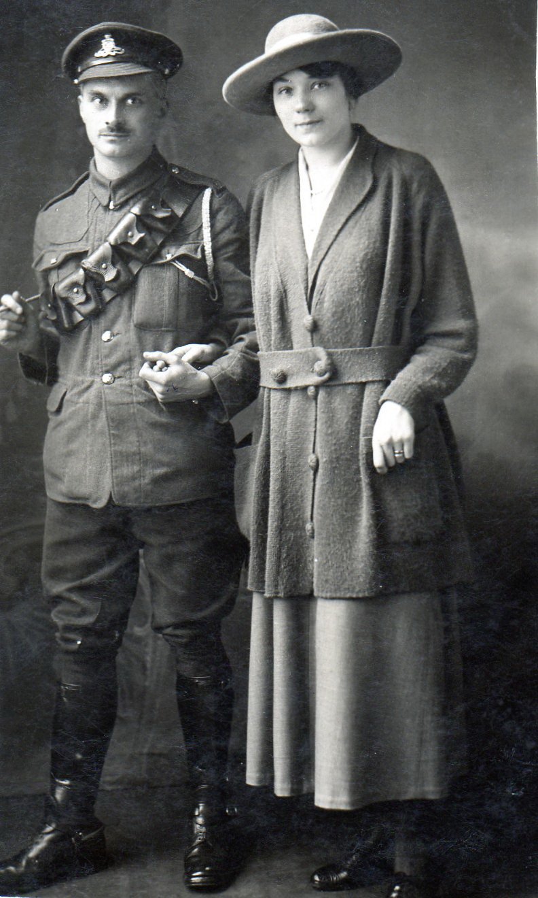

Thomas William Horne 1881 -
[ Home ] | [ Calendar ] | [ Surnames Index ] | [ Census Index ] | [ Family History ]A postman and head postman and the child of Thomas Horne (a brewer's drayman) and Harriett Woods, Thomas Horne, the first cousin twice-removed on the father's side of Nigel Horne, was born in St Pancras, London, England on Jun 13, 18811,2, was baptized in Camden, London, England on Aug 28, 1881 was married twice - to Gertrude Farley (on Feb 17, 1906 in Grays Inn Road, London, England) Mary Johnson (on Oct 12, 1918 in Finsbury Park, London, England, following the death of Gertrude Mabel Southwell c. May 1917)3. He had 1 child with Mary Johnson, Lilian Mary.
During his life, he was living at Britannia Street in St Pancras on Mar 31, 19015; at 35 Wharton Street, Clerkenwell, London on Apr 2, 19114; at 18 Derby Buildings in St Pancras on Jun 19, 19211 on the same road as his parents who were living at 25 Derby Buildings; and at 137 Derby Buildings in St Pancras on Sep 29, 19392. He served in the army from 1914 to 1920 (soldier Number: 185580, Rank: Gunner, Corps: Royal Garrison Artillery) He served in the army from 1914 to 1920 (soldier Number: 185580, Rank: Gunner, Corps: Royal Garrison Artillery)In 1921 he was working at G P O.
Parents
- Thomas Warner was born c. Nov 1854
- Harriett was born in 1860
Children
- Lilian Mary was born on Jan 4, 1921
Citations
- 1921 Census Of England & Wales - Findmypast (was age 40 and the head of the household)
- 1939 Register - Findmypast (was the head of the household)
- England & Wales Marriages 1837-2005 - Findmypast
- 1911 Census for England & Wales - Findmypast (was age 29 and the head of the household)
- 1901 England, Wales & Scotland Census - Findmypast (was age 19 and the son of the head of the household)
Media
Thomas Horne - Mary Johnson

Thomas Horn - Mary Ann Johnson - Lily Horn

England & Wales births 1837-2006 - BMD/B/1881/3/AZ/000272/187
England & Wales marriages 1837-2008 - BMD/M/1906/1/AZ/000127/082
1911 Census for England & Wales - GBC/1911/RG14/01231/0887/1
1939 Register Transcription - TNA-R39-0485-0485E-008-38
England & Wales marriages 1837-2008 - BMD/M/1918/4/AZ/000540/038
1939 Register - TNA/R39/0485/0485E/008/37
Britain, Campaign, Gallantry & Long Service Medals & Awards - GBM/MCI/1963137
Britain, Campaign, Gallantry & Long Service Medals & Awards - GBM/MCI/1963136
1921 Census of England & Wales - GBC/1921/RG15/00743/0389/01
Family Tree

Generated by ged2site. Last updated on Jun 11, 2024